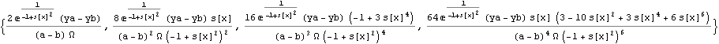

and eliminate W, a, b and s[x] between the five equations :
and eliminate W, a, b and s[x] between the five equations :
Rubel’s universal differential equation
The starting point, g(x), is a function which vanishes outside the interval (-1,+1) :
Its primitive is constant outside the interval (-1,+1), resp. f(-1)=0 if x<-1 and f(1)=Ω if x>1 :
Ω is a well-defined real (no closed form is known) :
Rubel’s model, f(x), fits the given function y(x) in the interval (a,b) (exactly at the ends of the interval) :
Example of a continuous junction between two consecutive intervals, say (0,1) and (1,3/2) (numerical integration is needed) :
Differential equation fullfilled by the model function, f(x), whatever the interval :

Set W= and eliminate W, a, b and s[x] between the five equations :
Mathematica needs a little help. Obviously, the two first equations allow to eliminate W and (a-b) respectively :
This is Rubel’s equation where fk stands for the kth derivative of y(x).